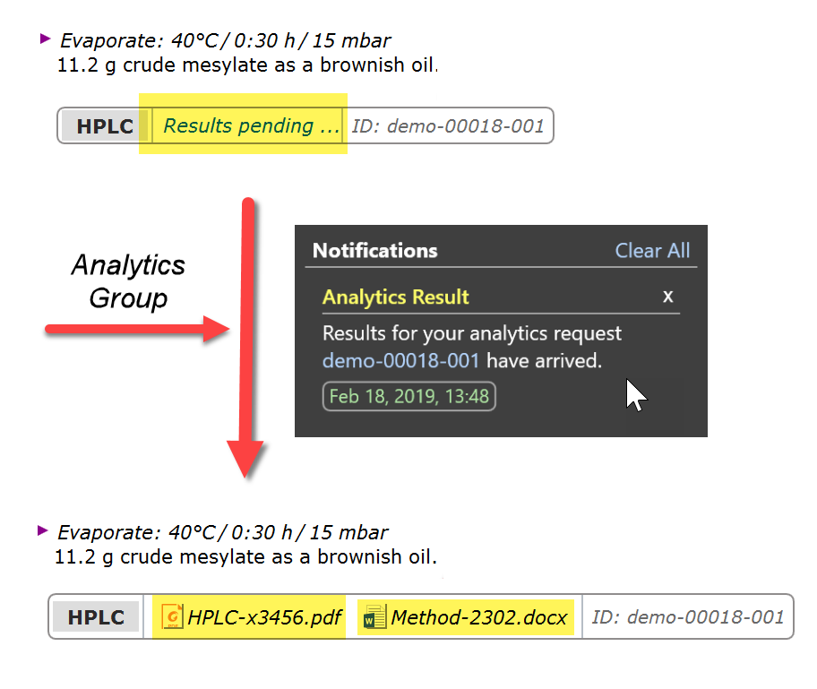
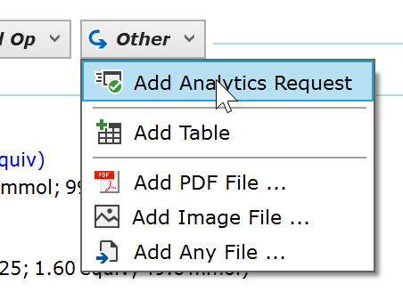
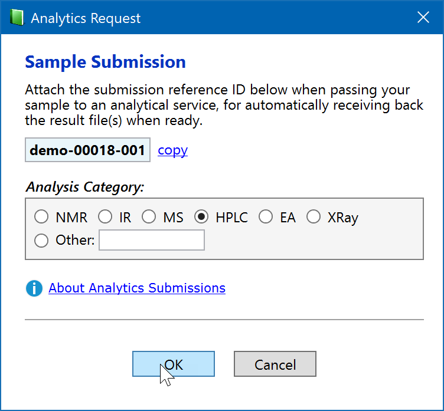
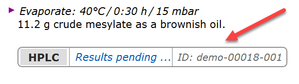
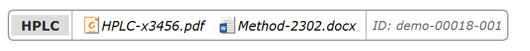
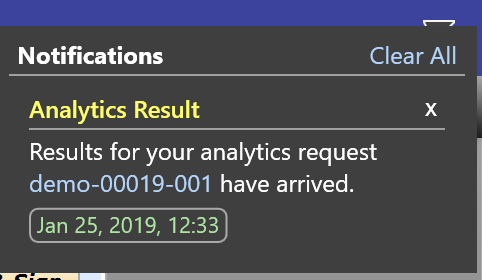
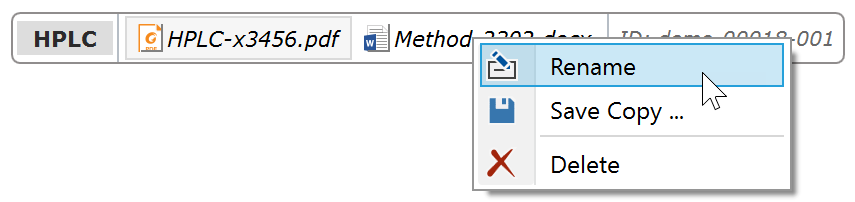
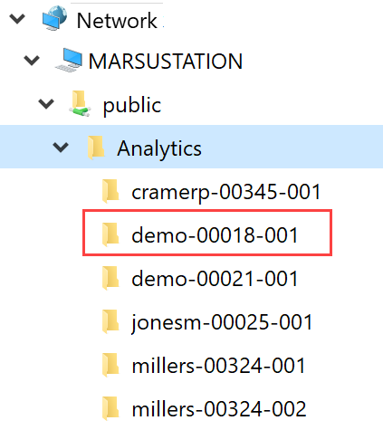

Analytics Requests
Introduction
Espresso ELN provides a convenient mechanism for the direct insertion of analytics results into your protocol by your analytics service, as shown below:

Whenever a sample is ready to be submitted to your analytics team, just insert a so far empty analytic submission element into the desired location of your protocol and send the sample along with the unique submission-ID to the analytics group. After completed measurement, they place the electronic result onto a shared drive. This is detected by Espresso ELN, which notifies you and automatically inserts copies of the documents into the submission panel. That's it!.
1. Prerequisite - Shared analytics folder
The infrastructural prerequisite for establishing this mechanism is minimal: A dedicated empty folder on a shared network drive is sufficient, which must be accessible by all ELN users and by the participating analytics service labs. The path to this shared folder, which might e.g. be called ‘Analytics’, needs to be communicated to all participants. Here's an example of such a path in UNC notation: "\\SHARE234\public\Analytics".
2. ELN User Perspective
So how does this work? The first step is initiated by the ELN user: Before submitting a physical sample to an analytics service, an Analytics Request protocol element is inserted at the desired protocol location:

The first time this is done, the path to the shared analytics folder (see previous section) is requested. When specified, a dialog presenting a unique sample submission reference ID appears. This reference ID needs to be passed to the the analytics service, along with the physical sample. Now select an analysis category and click OK:

This adds the Analytics Request element to the protocol:

Whenever a result file is published by the analytics team on the shared analytics folder (see next section), it immediately appears in the corresponding Analytics Request protocol element without any further interaction.

This is an independent copy of the file (i.e. not a link), which is directly stored into the experiments database. Multiple files may be present, which also may be gradually added by the analytics service if required - e.g. for a follow-up measurement of the same sample.
When an analytics file arrives this way, the notification flag in the top right corner of Espresso ELN is highlighted to inform to user. Clicking this flag opens the notification detail, where the blue request ID link opens the target experiment. Please note that notifications remain in the list until removed by clicking the "x" button in their top right corner.

Left-clicking a document in the Analytics Request protocol element opens it - provided a suitable viewing application is available. Potential changes to the original content are not saved back to the protocol, since these documents are intended for use as originals. Right-clicking a document brings up a context menu which allows to rename its title, save a copy to another location, or to delete it. Please note that adding own documents via drag/drop is not possible.

Duplication Limitations
An Analytics Request protocol element cannot be duplicated into another location, since is tied to a specific service request. Therefore, when a range of protocol elements containing an Analytics Request protocol element is pasted, all items except this element will be pasted. Also, the element will be skipped when cloning an experiment. However, it is possible to Cut & Paste it within the same experiment for changing its location within the protocol.
3. Analytics Lab Perspective
This section is aimed at analytics service members only. ELN users are not intended to interact with the shared Analytics folder and may skip this section.
When an ELN user inserts an analytics request into his protocol, a new subfolder with the exact name of his unique submission-ID is created inside the shared analytics folder. In above example, the folder “demo-00018-001” was automatically created. All the analytics lab needs to do now, is to copy their result file(s) into this folder, and that's it: Whenever the ELN of the requesting user is running, the added files are immediately transferred into the target Analytics Request elements within his protocol. Successfully transferred files still remain in the shared folder, but are marked by the prefix "copied_".

Additional files can be added to the target folder later on, e.g. for follow-up measurements of the same sample, for attaching an analytical method file, etc. This will result in additional files appearing inside the Analytics Request protocol element of the user.
File Placement Methods
The placement of files to the target folder can either be performed via simple drag/drop, or preferably by instructing your analytics software to copy the result files into this location, based on the submission reference ID provided by the user. If performed via software, it is important to understand that only completed files should be copied to the target folder; if the software first creates an empty file inside the target folder and then gradually fills it with data, the user just may obtain the initial empty file only.
Shared Folder Cleanup
The created unique submission subfolder, including all contained documents, is deleted whenever the user finalizes the experiment the analytics request belongs to, or if he deletes the corresponding Analytics Request protocol element. This ensures a constant cleanup of the shared analytics folder.